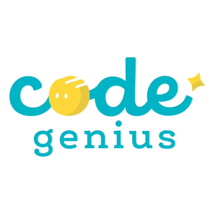

GE Puzzle Workbook • เฉลยP01Debugging Strategy
พัสดุถึงเพื่อน
กฎ: ตรวจชื่อก่อนหยิบกล่อง แผนที่ผิดคือ ส่ง → เดิน → หยิบ → ตรวจชื่อ เรียงใหม่ให้ทุกขั้นทำได้
คำตอบ: ตรวจชื่อบนกล่อง → หยิบกล่อง → เดินไปบ้านเพื่อน → ส่งกล่องให้เพื่อนตรวจชื่อก่อน → หยิบกล่อง → เดินไปบ้านเพื่อน → ส่งกล่อง ลำดับนี้ทำให้กล่องไปถึงคนที่ถูกต้อง
ชวนคิดต่อถ้าไม่ตรวจชื่อ อาจเกิดอะไรขึ้น?
อาจส่งผิดคน จึงต้องตรวจชื่อก่อนตามกฎ
ภาพประกอบสร้างขึ้นสำหรับชุดนี้ • ชุด 13 พ.ย. 2026GE Puzzle Workbook • เฉลยP02
Functions
เรียกชุดลูกปัด
คำสั่ง “ชุดสามรูป” ทำ วงกลม → สามเหลี่ยม → สี่เหลี่ยม เรียกชุดสามรูป 2 ครั้งได้ภาพนี้ ถ้าเรียกอีก 1 ครั้งจะเพิ่มอะไร?
คำตอบ: วงกลม • สามเหลี่ยม • สี่เหลี่ยมเรียกชุดคำสั่งเดิมอีกครั้ง จึงเพิ่มวงกลม → สามเหลี่ยม → สี่เหลี่ยม โดยไม่ต้องบอกทีละรูปใหม่
ชวนคิดต่อวาดรูปแบบซ้ำใหม่ของตัวเอง 2 ชุด
ยอมรับรูปแบบใดก็ได้ที่มีชุดคำสั่งชัดและทำซ้ำเหมือนเดิมสองครั้ง
ภาพประกอบสร้างขึ้นสำหรับชุดนี้ • ชุด 13 พ.ย. 2026GE Puzzle Workbook • เฉลยP03
Variables & Data
นับก้าวส่งของ
ตัวนับเริ่มที่ 0 ทุกลูกศรเพิ่ม 1 หุ่นยนต์เดิน → → ↓ → ไปถึง G ตัวนับเป็นเท่าไร?
คำตอบ: 4 ก้าวนับเพิ่มทีละคำสั่ง: 0 → 1 → 2 → 3 → 4 ตัวนับเก็บค่าจำนวนก้าวที่เปลี่ยนไป
ชวนคิดต่อถ้าเดินกลับอีก 2 ก้าว ตัวนับจะเป็นเท่าไร?
6 ก้าว เพราะ 4 + 2 = 6
ภาพประกอบสร้างขึ้นสำหรับชุดนี้ • ชุด 13 พ.ย. 2026GE Puzzle Workbook • เฉลยP04
Digital Footprint + Cybersecurity Basics
รูปไหนแชร์ได้ปลอดภัยกว่า?
สมมติจะลงรูปงานวาดในพื้นที่สาธารณะ ควรเลือกภาพใดโดยไม่เปิดเผยข้อมูลส่วนตัว?
คำตอบ: ภาพงานวาดอย่างเดียว ไม่มีข้อมูลระบุตัวเลือกภาพงานอย่างเดียว ข้อมูลที่อยู่และเบอร์โทรไม่จำเป็นต่อการโชว์งาน ควรถามผู้ใหญ่ที่ไว้ใจก่อนโพสต์
ชวนคิดต่อถ้ามีเพื่อนอยู่ในภาพ ควรทำอย่างไรก่อนแชร์?
ขออนุญาตเพื่อนและผู้ใหญ่ที่ไว้ใจ หรือไม่แชร์รูปนั้น
ภาพประกอบสร้างขึ้นสำหรับชุดนี้ • ชุด 13 พ.ย. 2026GE Puzzle Workbook • เฉลยP05
Nested Logic
ประตูสวนสัตว์หุ่นยนต์
ถ้ามีปีก: ถ้าปีกมีลายไป A ถ้าไม่มีลายไป B • ถ้าไม่มีปีกไป C เลือกประตูตามรูป
คำตอบ: นก: B ปีกไม่มีลาย • แมว: C ไม่มีปีก • ผีเสื้อ: A ปีกมีลาย • ปลา: C ไม่มีปีกนกในภาพมีปีกไม่มีลายไป B ผีเสื้อมีปีกลายไป A แมวและปลาไม่มีปีกไป C นี่คือถามเงื่อนไขซ้อนในอีกเงื่อนไข
ชวนคิดต่อวาดสัตว์ในจินตนาการที่เข้าประตู A ได้
สัตว์ที่วาดต้องมีปีกและปีกมีลายตามกฎ
ภาพประกอบสร้างขึ้นสำหรับชุดนี้ • ชุด 13 พ.ย. 2026GE Puzzle Workbook • เฉลยP06
Variables & Data
หุ่นยนต์ตัวไหนพร้อมส่งของ?
เกมนี้กำหนดให้ส่งของ 1 รอบใช้พลังงาน 3 หน่วย หุ่นยนต์ต้องมีอย่างน้อย 3 หน่วย เลือกทุกตัวที่พร้อม: A มี 2, B มี 4, C มี 1, D มี 3 หน่วย ตัวเลขเป็นกติกาเกม ไม่ใช่ข้อมูลแบตเตอรี่จริง
คำตอบ: B: 4 หน่วย / D: 3 หน่วยB มี 4 และ D มี 3 จึงพอสำหรับภารกิจ ส่วน A มี 2 และ C มี 1 ยังไม่พอ เราเลือกจากค่าพลังงานที่มีตอนนี้
ชวนคิดต่อถ้า A ได้พลังงานเพิ่ม 1 หน่วย ตอนนี้ตัวไหนพร้อมส่งของบ้าง?
A, B และ D เพราะ A เปลี่ยนจาก 2 เป็น 3 ส่วนค่าของ B และ D ยังเท่าเดิม
ภาพประกอบสร้างขึ้นสำหรับชุดนี้ • ชุด 13 พ.ย. 2026GE Puzzle Workbook • เฉลยP07
Simple UI
ตู้เลือกน้ำ
น้องต้องการน้ำเปล่า แต่ใช้ตู้นี้ครั้งแรก แบบใดช่วยให้เลือกได้โดยไม่ต้องเดา?
คำตอบ: แบบ A: ปุ่มเขียน “น้ำเปล่า” และ “น้ำส้ม”คำบนปุ่มแบบ A บอกสิ่งที่จะได้โดยตรง เลขอย่างเดียวต้องมีคำอธิบายเพิ่ม สีสวยไม่ได้แปลว่าใช้เข้าใจง่ายเสมอ
ชวนคิดต่อวาดปุ่มสำหรับเลือกนมให้คนใช้เข้าใจ
มีคำว่า “นม” ชัดเจน ภาพนมอาจช่วยเพิ่ม แต่สีอย่างเดียวไม่พอ
ภาพประกอบสร้างขึ้นสำหรับชุดนี้ • ชุด 13 พ.ย. 2026GE Puzzle Workbook • เฉลยP08
Simple UI
สั่งข้าวแล้วหรือยัง?
หลังแตะสั่งข้าว หน้าจอควรแสดงอะไรให้รู้ว่ารับคำสั่งแล้ว?
คำตอบ: ได้รับรายการข้าวแล้ว • คิว 12ข้อความยืนยันบอกทั้งรายการที่ได้รับและคิว ช่วยให้ไม่ต้องเดาหรือกดสั่งซ้ำ
ชวนคิดต่อถ้าสั่งไม่สำเร็จ ควรบอกอะไรให้ผู้ใช้ทำต่อได้?
เช่น “ยังไม่ได้รับรายการ กรุณาลองอีกครั้ง” ไม่อ้างว่ารับสำเร็จ
ภาพประกอบสร้างขึ้นสำหรับชุดนี้ • ชุด 13 พ.ย. 2026GE Puzzle Workbook • เฉลยP09
Prototype & Test
กล่องดินสอของมิน
ทดลองกับมินแล้ว: A ปิดไม่ได้ หยิบง่าย • B ปิดได้ หยิบง่าย • C ปิดได้ หยิบยาก มินต้องการทั้งปิดได้และหยิบง่าย เลือกแบบจากผลทดสอบ
คำตอบ: B กล่องมีฝาและช่องแยกดินสอผลทดสอบ B ผ่านทั้งสองความต้องการ เลือกจากสิ่งที่มินลอง ไม่ใช่สีที่เราชอบ หากใช้จริงยังติดขัดให้ปรับและลองใหม่
ชวนคิดต่อวาดกล่องของตัวเองให้ตรงความต้องการของมิน แล้วให้เพื่อนดู ถามว่า “ตรงไหนยังดูไม่ชัด?” เลือกปรับ 1 จุด
คำตอบมีได้หลายแบบ ภาพควรแสดงวิธีปิดและหยิบของได้ง่าย พร้อมระบุจุดที่เพื่อนยังดูไม่ชัดและสิ่งที่จะปรับ การดูภาพยังไม่ใช่การทดสอบใช้งานกล่องจริง
ภาพประกอบสร้างขึ้นสำหรับชุดนี้ • ชุด 13 พ.ย. 2026